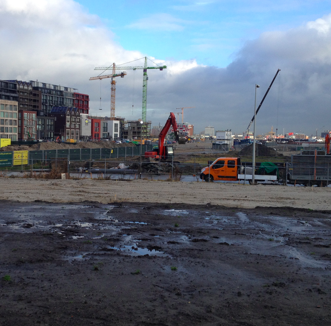
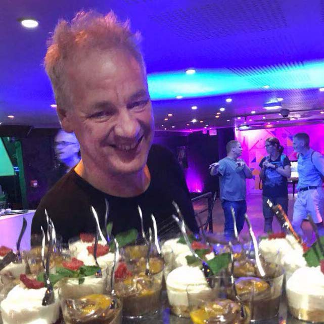
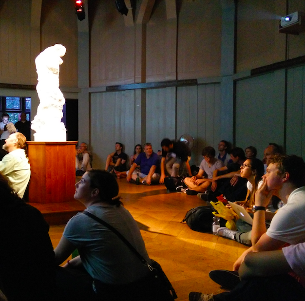

Een Teachmeet is een bijeenkomst om informeel maar intensief ideeën te delen. Ontstaan als randprogramma bij conferenties, de unconference. Inmiddels door velen gezien als het belangrijkste onderdeel van conferenties. En als je druk bent zoals wij met onderwijs kun je de hele conferentie overslaan en meteen ter zake komen.
Tijdens de MLAbovenbouw Teachmeet zal naast aandacht voor elkaars professionele ontwikkleing ook gelegenheid zijn om te dansen, een heerlijke manier om aflsuiten van blok, projecteek en PWSweek te vieren. Je bent van harte uitgenodigd. Je mag iets lekker meenemen en je mag je paar minuten roem claimen, maar het is ook gezellig als je gewoon met alleen een goed humeur komt.
Oorspronkelijk Schots, daarna populair in de Angelsaksische wereld en ik organiseerde mijn eerste in Amsterdam in de zomer van 2015. Een Iers filmpje dat het in vijf minuten uitlegt hieronder, als je het liever leest, probeer dan eens Wikipedia.
Zorg dat je erbij bent op 1 februari van 19:00 tot 21:00 uur. Plaats van samenkomen is de werkplaats van Joek van Montfort, Haparandaweg 67-B-5, 1013BD Amsterdam
Verwacht je honger te hebben rond die tijd, kom eerder! Vanaf 18:00 soep en brood.
Tijdens en na Teachmeet gelegenheid tot reflectie, vanaf zeker uur wordt er gedanst.
Er is wat te drinken, er zijn hapjes en er is aandacht voor de sprekers.
Kern van de TeachMeet is wervelende reeks korte presentaties door deelnemers, nano (2 minuten) of micro-formaat (5 minuten). Dat is niet lang en dat is precies waardoor de stemming er makkelijk in blijft.
Voor een drietal mensen die niet zozeer willen spreken maar een discussiepunt willen inbrengen hebben we gedurende een kwartier de mogelijkheid tot debat.
Meedoen is makkelijk: stuur ons een bericht via onderstaande knop. Vermeld of je inhoudelijk wilt bijdragen (nano, micro of debat) dan wel iets lekkers meeneemt.
Voor je het weet figureer je in bovengenoemde lijst van programmaonderdelen.
Vanzelfsprekend ben je net zo welkom als luisteraar, en er is een grans aan wat we kunnen opeten, dus als je daar geen tijd voor hebt, geen probleem. Wel even aanmelden zodat iedereen kan zien of het gezellig wordt.
Voorlopig weet ik niet of ik iets wil presenteren of iets mee wil nemen, maar ik wil wel graag komen om te luisteren, kletsen en dansen:
Evelien - Karlijn - Magnus - Hanneke B -
Voorlopig afgekeurde praatjes die je wel een inspiratie kunnen geven voor betere verhalen: Mijn droomlokaal / Last night the DJ saved my life / Van lezen zonder schrijven of tekenen steek je niet veel op / MLA zonder jaarlagen / Revoluties slagen alleen als er iets te lachen is / Ten noorden van Napels is alle koffie water / Ich hab' noch einen Koffer in Berlin / Mijn verzameling wiskunde musea / De zandbak als ideale leeromgeving / Rekendeficientie los je op in klas 1 / DSM: Documentaires en Speelfilms op het MLA / Wat scateboarders ons kunnen leren over leren / Informatica als kunstvak / Open projectonderwijs in de jaren 70